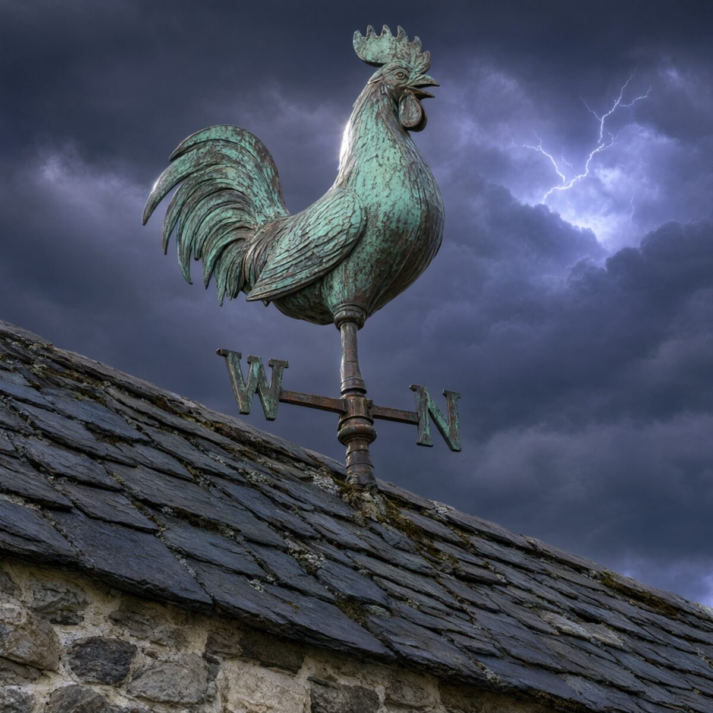
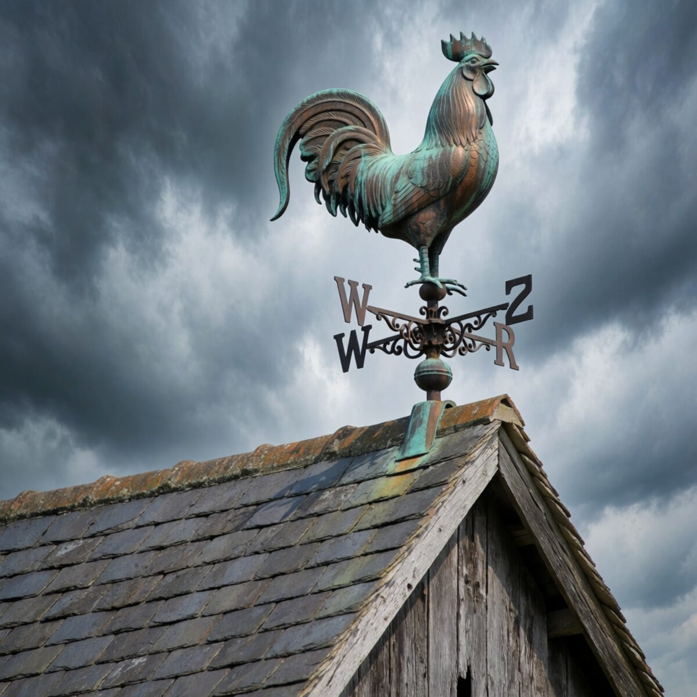

Type a request, read the receipt.


4 images · ≈ $0.018 · Speed
What Fane does
Ask Vane from any shell.
vane "question" prints a cited answer. --json gives an agent the answer and its sources, and the exit code says what happened: 0 answered, 1 error, 2 usage.
Every picture comes from a different model.
Four images, four models, and four fallbacks behind each one, so a model that fails never leaves a gap. In the Quality run on this page, the fourth model timed out and its fallback drew that picture.
Say what to change, and it changes.
“Make the third one a pencil sketch” edits that picture and leaves the others alone. The earlier picture goes to the image models as the reference.
Articles with sources a model cannot invent.
“Write an article about …” researches, outlines, drafts, checks the facts and edits, in English or Greek. The sources list is written by code from the pages Vane read.
A post for LinkedIn or Facebook.
The same research and fact check as an article, held to the platform’s length and to what shows before “see more”. The sources come as a first comment to paste under the post.
Code with a review and tests.
“Write a Python script that …” gives the files, a review, fixes for what it found, tests and a README. Every file is syntax checked. Nothing generated is run.
Ideas past the obvious ones.
“Brainstorm …” asks for unlikely ideas on purpose, groups and scores them, works out the best and ends with one recommendation and a plan.
Thirty-one patches fix and extend Vane.
Each one is pinned to Vane 1.12.2. On any other build a patch changes nothing and exits with an error. CI applies every patch twice, to a fresh copy of the image.
Light or dark in one click.
A button in Vane’s sidebar, and the Settings gear now opens with Enter or Space. Home starts a new chat instead of keeping the old one on screen.
Install and ask
First, get Fane and start Vane with it.
git clone https://github.com/georgehadji/Fane
cd Fane
docker compose up -dCompose runs Vane from the image the patches were checked against, applies every patch at each start, and opens Vane on 127.0.0.1:3000 only.
Already run Vane in Docker? Apply Fane to it instead.
node scripts/apply.mjsok container "vane" running ok OpenRouter provider "Openrouter" found ok patch-always-search applied (2/2 targets) ok patch-answer-language applied (1/1 targets) ok patch-article-chat applied (2/2 targets) ok patch-brainstorm-chat applied (1/1 targets) ok patch-chat-title applied (1/1 targets) ok patch-code-chat applied (2/2 targets) ok patch-colors applied (1/1 targets) ok patch-discover-ellipsis applied (1/1 targets) ok patch-discover-greek applied (1/1 targets) ok patch-discover-summary-greek applied (6/6 targets) ok patch-editorial-greek applied (1/1 targets) ok patch-greek-lang applied (2/2 targets) ok patch-icon-buttons applied (5/5 targets) ok patch-image-chat applied (4/4 targets) ok patch-image-serve applied (1/1 targets) ok patch-image-ui applied (1/1 targets) ok patch-library-ago applied (1/1 targets) ok patch-mode-icons applied (6/6 targets) ok patch-new-chat applied (1/1 targets) ok patch-pipeline-abort applied (5/5 targets) ok patch-quality-check applied (2/2 targets) ok patch-quality-mode applied (10/10 targets) ok patch-scholarly-sources applied (8/8 targets) ok patch-scrape-guard applied (3/3 targets) ok patch-social-sources applied (6/6 targets) ok patch-theme-toggle applied (4/4 targets) ok patch-toolcall-empty-args applied (1/1 targets) ok patch-type applied (1/1 targets) ok patch-ui-fane-link applied (4/4 targets) ok patch-weather applied (2/2 targets) ok patch-web-search applied (4/4 targets)
Then ask it a question.
vane "Why is a weathervane also called a fane?"The term fane is an archaic or obsolete synonym for a
weathervane, representing the original historical form from
which the modern word vane evolved [1][2].
Sources:
[3] fane - Wiktionary, the free dictionary
https://en.wiktionary.org/wiki/fane
[4] fana - Wikiwand
https://www.wikiwand.com/en/dictionary/fana
Shortened: the full answer cites nine sources.
Then ask for pictures, in Vane’s chat.
create 2 images of a copper weathervane rooster on a stone barn roof under a stormy sky2 images · ≈ $0.006 · Speed
Questions
Is this a fork of Vane?
No. Fane is a small toolkit around the official Docker image, pinned to the digest its patches were checked against. Your Vane stays Vane.
Which Vane does it fit?
Vane 1.12.2, image digest sha256:0b61bf0d4470… The patches match exact fragments of that build. On any other build they change nothing and exit with an error.
What does a picture cost?
Four images cost 1.8 cents in Speed, 6.5 cents in Balanced and 38 cents in Quality, as the runs on this page did at OpenRouter’s prices. The price is printed under every answer.
Do I need OpenRouter?
For pictures, yes: an OpenRouter key, added as a provider in Vane’s settings. Articles, posts, code and ideas take OpenRouter or a local freellmapi gateway with free models, added the same way. Your prompt goes to that provider and the models behind it. The pictures are saved on your own machine, in Vane’s data volume.
What if a model fails?
Each picture has four fallback models. If a model fails, the next one draws that picture. If one refuses a prompt, Fane rewrites it and retries only the missing pictures. When credits run out, it says so.
Can an agent use it?
Yes. vane "question" --json prints the answer and its sources. Exit code 0 means answered, 1 a runtime error, 2 a usage error. vane --doctor checks the whole setup.